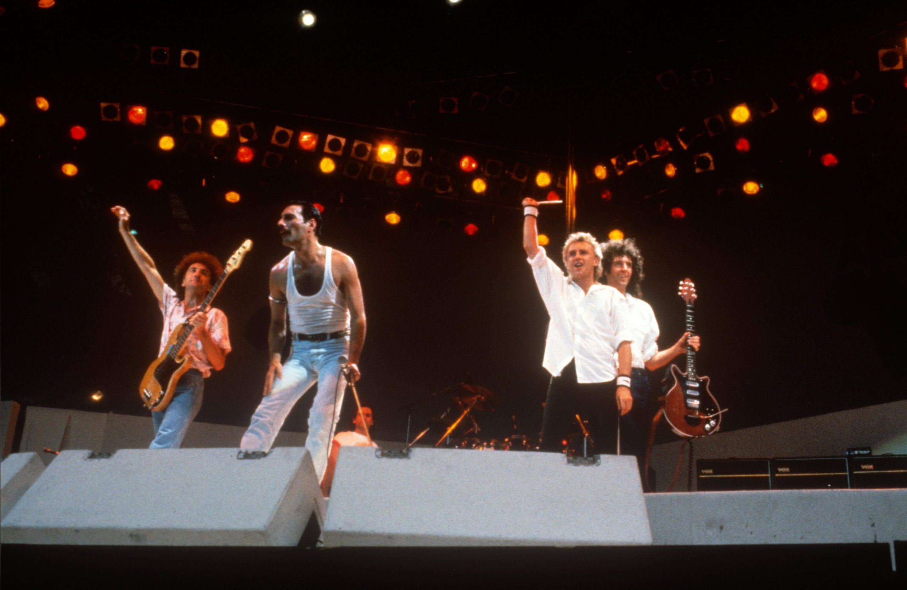

¿Qué es el Rock?
El rock es un género musical que nació en los años 50 y ha evolucionado constantemente. Se caracteriza por el uso de guitarras eléctricas, batería, bajo y una actitud rebelde.
Subgéneros del Rock
- Hard Rock – Potente y lleno de energía (ej. AC/DC)
- Punk Rock – Rápido y directo (ej. The Ramones)
- Rock Alternativo – Más experimental (ej. Radiohead)
- Grunge – Oscuro y crudo (ej. Nirvana)
- >Indie Rock – Independiente y creativo (ej. Arctic Monkeys)
Bandas Legendarias
- The Beatles
- Queen
- Led Zeppelin
- Pink Floyd
- Metallica

Recomendaciones para escuchar
- Bohemian Rhapsody – Queen
- Smells Like Teen Spirit – Nirvana
- Stairway to Heaven – Led Zeppelin
- Another Brick in the Wall – Pink Floyd
- Enter Sandman – Metallica